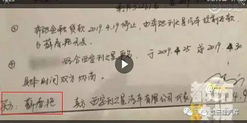
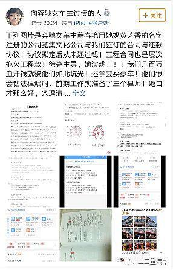
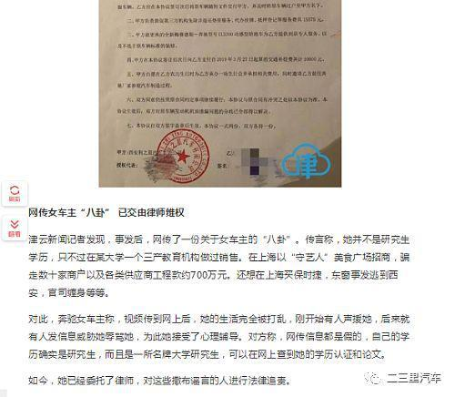

回复@l水平不行l:把所有可能性列出来，然后分析发生概率，然后制定对策。这样的逻辑思维体系你能理解吗。理解不了就继续去感觉怪怪的吧。//@l水平不行l:要么这，要么那，好像很有道理的样子。怎么感觉哪里怪怪的？@ETF拯救世界:A股历史上除了2008年底开始的上涨，从未出现过类似这波行情的毫无回调的情况。果然历史没有简单重复的啊。
回复@谁喷益达我抽谁:你的想法和我的观察不谋而合。继续观察吧。我不信长牛会这样一路下去。所以，要么是我错了，不是长牛。要么就不会这样涨下去。//@谁喷益达我抽谁:我在想，如果像09年那样没有夯实底部就急涨的话，那么涨幅肯定不会像07年和15年涨幅那么大了@ETF拯救世界:A股历史上除了2008年底开始的上涨，从未出现过类似这波行情的毫无回调的情况。果然历史没有简单重复的啊。
这才是蝴蝶效应。我的一点想法：第一，欠钱和维权是两回事，要分开说。维权的事情100%支持，也非常敬佩。第二，欠钱的事也建议双方追到底，如果是造谣，把造谣的人和幕后黑手全部绳之以法。如果是真的，该还钱还钱。这个世界上，没有圣人，别觉得做了好事的人就一点错不可能犯。你认识圣人吗？我不认识@新浪财经:【奔驰女车主被指涉千万债务纠纷 网友：一码归一码】早在女子维权期间，她略带南方口音提出对奔驰4s点收取一万五的金融服务费的质疑：“ 一万五让我们做生意的得卖1000多碗面！”让众多网友私下猜疑该女子从事餐饮行业。而据微博网友@向奔驰女车主讨债的人 爆料，奔驰维权女车主名叫薛春艳，毕业于上海某理工大学，目前牵涉一起数额巨大的债务纠纷案件。（来源：二三里资讯）奔驰维权女车主被指卷入一起千万债务纠纷 回应:假的